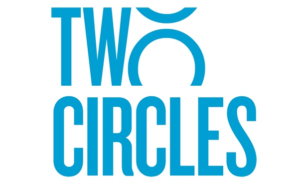
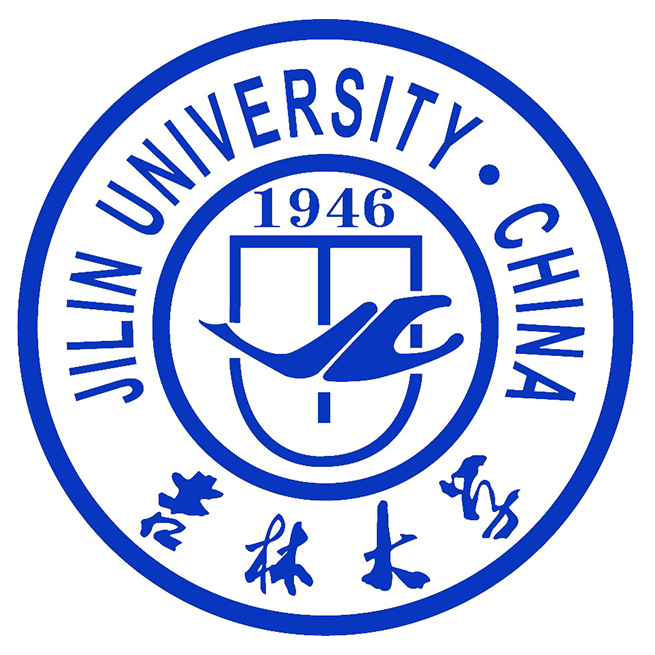
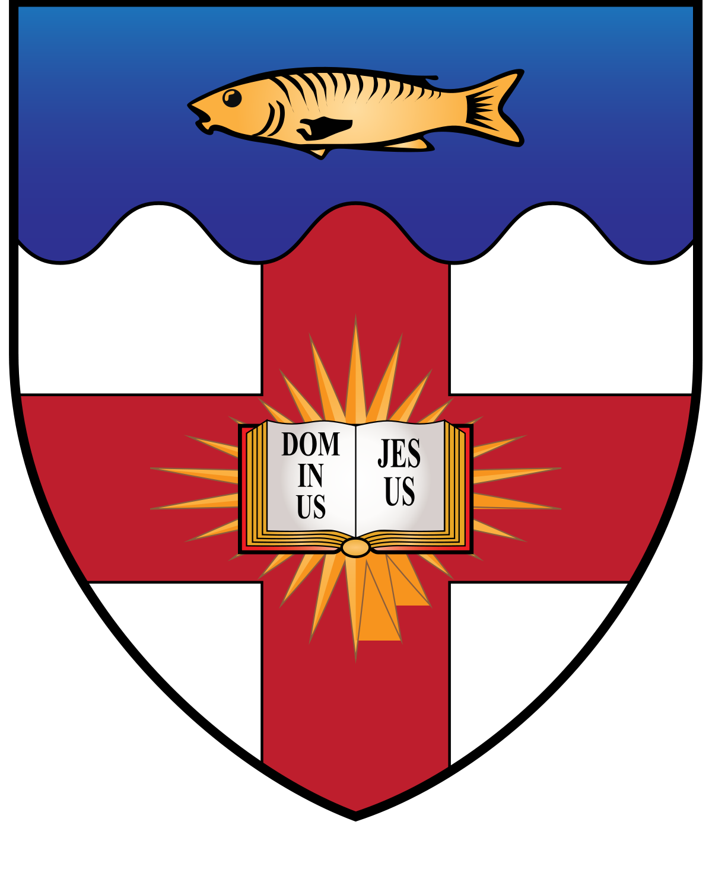
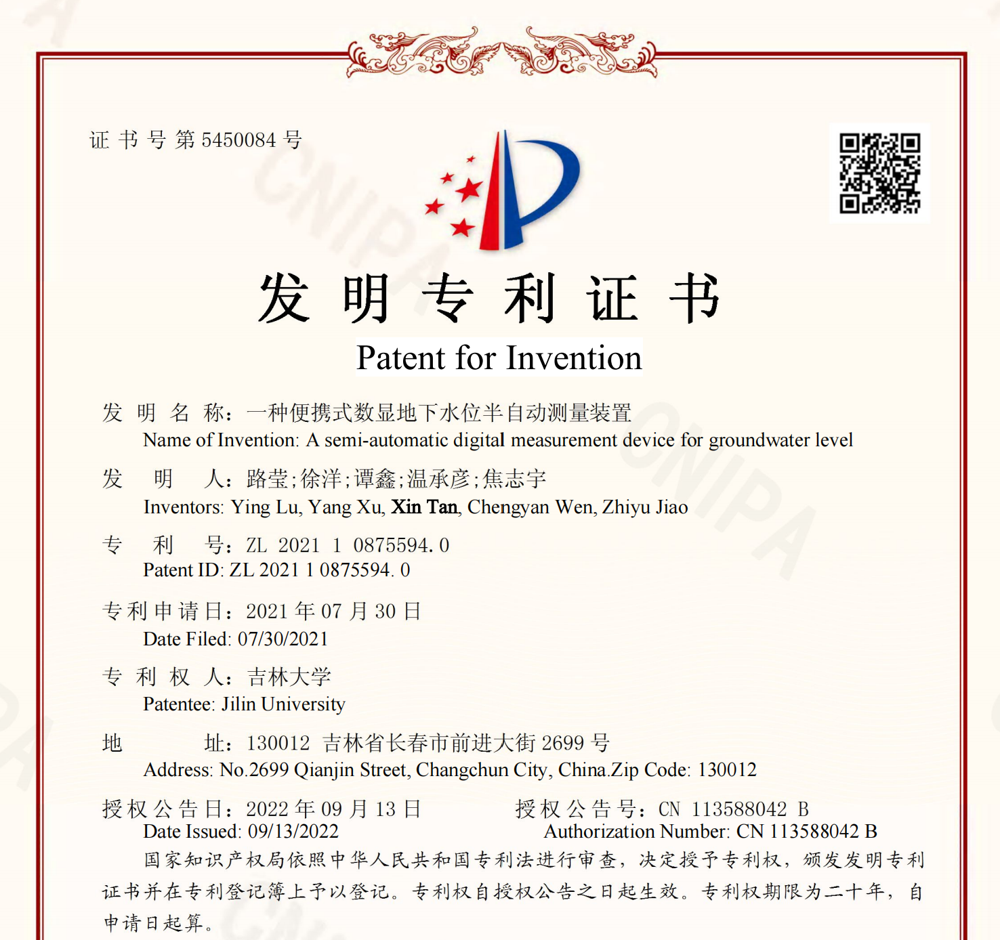

Vancouver, BC · Open to relocation across Canada
Data Engineer / Architect · AI/ML Developer · Consultant · Builder · Yapper — currently in Sports & Entertainment
I'm a data engineer based in Vancouver, currently working in the sports and entertainment industry. My work sits across data platforms, pipeline development, and analytics infrastructure, with a particular interest in building reliable systems that turn complex data into something useful. Working at a consultancy has also pulled me toward the leadership and client-facing side of the job — translating complex technical work for stakeholders, and mentoring teammates along the way. I like that part just as much as the coding.
More recently, I've been spending time exploring AI and machine learning — particularly where they intersect with data engineering, from AI-assisted development to the infrastructure and data foundations behind intelligent systems.
I hold a Master's degree in Computer Science from Simon Fraser University. Fun fact: I've worked at both Apple and Samsung. I've also worked across a few different engineering environments, which has shaped how I think about data, systems, and problem-solving.
Originally from Guangzhou and now exploring Canada, I try to stay away from the keyboard when I can — tennis, snowboarding, running, or finding another reason to get outside.

Vancouver, Canada · sports & entertainment data consultancy
Vancouver, Canada · co-op, then contract
Suzhou, China
Shenzhen, China
Halifax, Canada · Mitacs Globalink Research Internship · Data Analytics for Clean Water Technologies
Raleigh, USA · Netflix Prize Movie Ratings Prediction

Changchun, China · Intelligence-control software for sandstone-type uranium mining
MSc, Professional Computer Science (Big Data track) · includes an 8-month co-op · Mitacs Globalink Graduate Fellowship ($15,000)
B.Sc. Computer Science and Technology (2021–2023) & B.Eng. Environmental Engineering (2019–2021)

Exchange Student, Oxford Prospect Programme, Regent's Park College · Best Presentation Award (4/30)
High School Diploma, Science

Ying Lu, Yang Xu, Xin Tan, Chengyan Wen, Zhiyu Jiao
Main Developer · Coursework · Sep 2023 – Dec 2023
Built a data pipeline with Spark, Databricks, and GCP to benchmark Deequ against DuckDB for data-quality checks on streaming and batch data, as part of a graduate databases course.
Open to conversations about data engineering, sports analytics, or just a chat about tennis and mountains. Reach out any time.